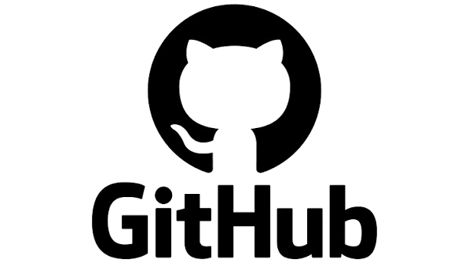

SARRERA
Ezertan hasi aurretik, gure taldeak izango dituen zereginak zein izango diren eta lana nola antolatuko dugun jakitea ezinbestekoa dugu lanean ondo aritzeko. Horretarako, **GitHub** tresna erabili dugu. Honetaz aparte, ebaluazio honetan zehar digitalizazioaren hainbat kontzeptu ezberdin ere landu ditugu (Digitalizazioa, IT eta OT teknologiak, TGD-ak, cloud computing…)
